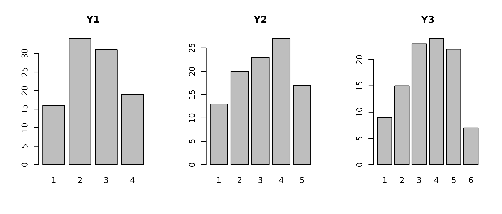
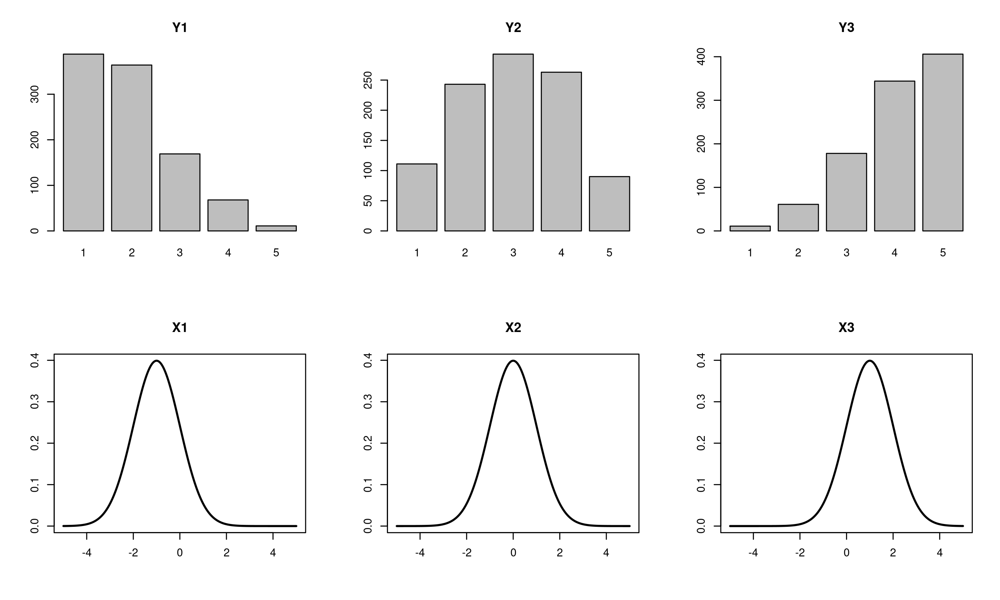
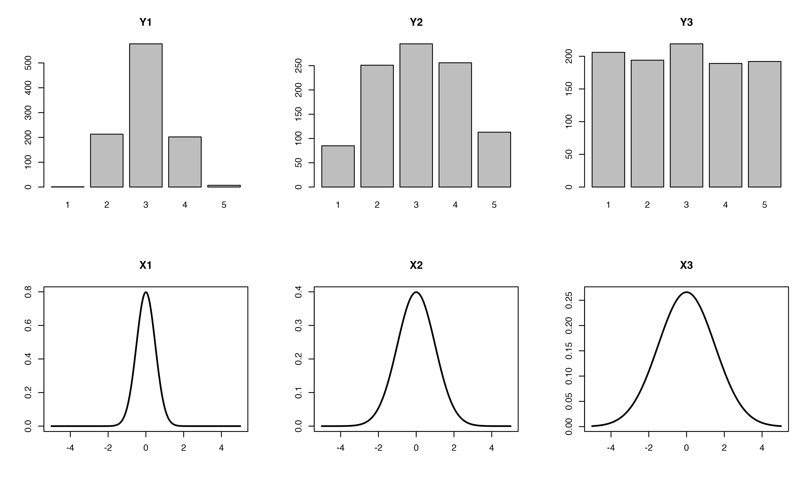
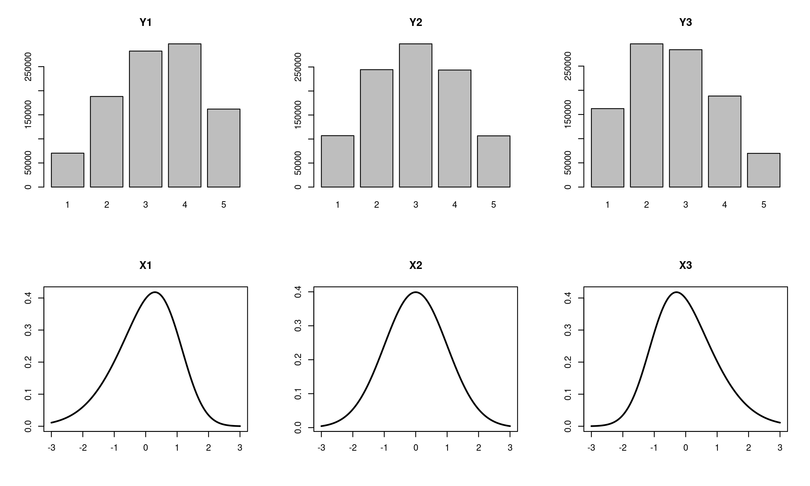
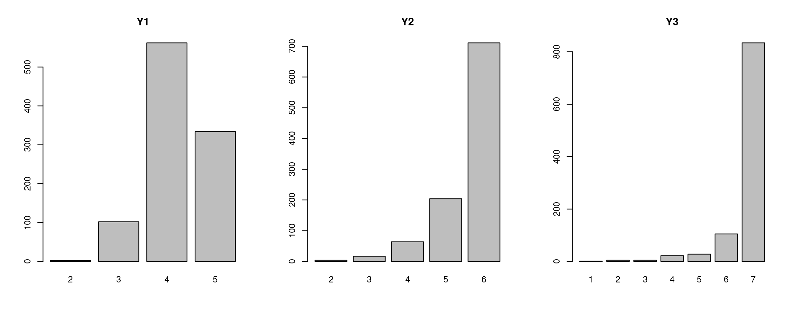
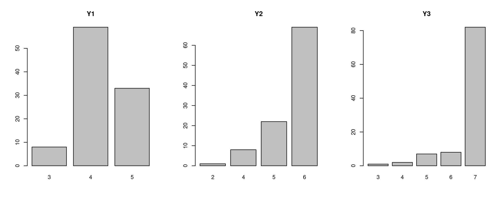

Simulating Likert item responses in R
Marko Lalovic
Last Updated: 2024-06-06
Source:vignettes/responsesR.Rmd
responsesR.RmdThis is a quick overview of the responsesR package:
Generating random item responses
First, load the package responsesR, and set seed for reproducibility:
library(responsesR)
set.seed(12345)To generate n = 10 responses with K = 5
response categories (on a 5-point Likert scale), use:
get_responses(n = 10, K = 5)
#> [1] 4 5 4 5 2 3 2 2 4 1To generate n = 100 responses to multiple Likert items
on different scales (for example K = 4, 5, 6), use:
data <- get_responses(n = 100, K = c(4, 5, 6))The result is an array of simulated responses, where columns represent responses to Likert items:
head(data)
#> Y1 Y2 Y3
#> [1,] 2 4 3
#> [2,] 2 2 5
#> [3,] 4 4 3
#> [4,] 2 2 3
#> [5,] 3 5 1
#> [6,] 3 1 3The corresponding bar plots are shown below:

Correlations between latent variables
To set a specific correlation between latent variables, such as 0.5,
set R = 0.5:
data <- get_responses(n = 1000, K = c(4, 5, 6), R = 0.5)
cor(data)
#> Y1 Y2 Y3
#> Y1 1.0000000 0.4605768 0.4148396
#> Y2 0.4605768 1.0000000 0.4439355
#> Y3 0.4148396 0.4439355 1.0000000Alternatively, provide a correlation matrix. For instance, create a 3 by 3 correlation matrix:
R <- c(1.00, -0.63, -0.39, -0.63, 1.00, 0.41, -0.39, 0.41, 1.00)
R <- matrix(R, nrow=3)
R
#> [,1] [,2] [,3]
#> [1,] 1.00 -0.63 -0.39
#> [2,] -0.63 1.00 0.41
#> [3,] -0.39 0.41 1.00Then, use it to generate responses to Likert items with a latent correlation matrix R:
data <- get_responses(n = 1000, K = c(4, 5, 6), R = R)
cor(data)
#> Y1 Y2 Y3
#> Y1 1.0000000 -0.5799421 -0.3515463
#> Y2 -0.5799421 1.0000000 0.3769934
#> Y3 -0.3515463 0.3769934 1.0000000To use a random correlation matrix, set
R = "random":
data <- get_responses(n = 1000, K = c(4, 5, 6), R = "random")
cor(data)
#> Y1 Y2 Y3
#> Y1 1.0000000 -0.1990952 0.3258327
#> Y2 -0.1990952 1.0000000 -0.7680800
#> Y3 0.3258327 -0.7680800 1.0000000Parameters of the latent distribution
By default, the function get_responses generates
symmetrically distributed responses. To introduce asymmetry and alter
the properties of hypothetical survey respondents, adjust the mean
mu, standard deviation sd, and skewness
gamma1 of the latent distribution.
Mean
To generate responses from latent distributions with different means,
you can set the means using the mu parameter. For example,
to set the means of latent distributions to -1, 0, and 1, execute:
data <- get_responses(n = 1000, mu = c(-1, 0, 1))The generated responses and the corresponding densities of latent distributions are displayed below.
par(mfrow=c(2, 3))
for(i in 1:3) {
barplot(table(data[, i]))
title(paste("Y", i, sep = ""))
}
x <- seq(-5, 5, length = 1000)
y <- lapply(c(-1, 0, 1), function(mu) dnorm(x, mean = mu))
for(i in 1:3) {
plot(x, y[[i]], type="l", lwd = 2, xlab = "", ylab = "")
title(paste("X", i, sep = ""))
}
Standard deviation
You can adjust the standard deviations of latent distributions using
the sd parameter. For instance, specifying
sd = c(0.5, 1, 1.5):
data <- get_responses(n = 1000, sd = c(0.5, 1, 1.5))This generates the following responses with corresponding densities of latent distributions depicted below:
par(mfrow=c(2, 3))
for(i in 1:3) {
barplot(table(data[, i]))
title(paste("Y", i, sep = ""))
}
y <- lapply(c(0.5, 1, 1.5), function(s) dnorm(x, sd = s))
for(i in 1:3) {
plot(x, y[[i]], type="l", lwd = 2, xlab = "", ylab = "")
title(paste("X", i, sep = ""))
}
Skewness
You can adjust the skewness of latent distributions using the
gamma1 parameter. For instance, specifying
gamma1 = c(-0.5, 0, 0.5) sets the skewness of latent
distributions to -0.5, 0, and 0.5:
data <- get_responses(n = 10^6, gamma1 = c(-0.5, 0, 0.5))The resulting responses with corresponding densities of latent distributions are displayed below:
par(mfrow=c(2, 3))
for(i in 1:3) {
barplot(table(data[, i]))
title(paste("Y", i, sep = ""))
}
dp <- apply(cbind(rep(0, 3), rep(1, 3), c(-0.5, 0, 0.5)), 1,
function(x_row) { convert_params(as.vector(x_row)) })
x <- seq(-3, 3, length = 1000)
y <- lapply(1:3, function(i) {
d_skew_normal(x, dp[["xi", i]], dp[["omega", i]], dp[["alpha", i]])
})
for(i in 1:3) {
plot(x, y[[i]], type="l", lwd = 2, xlab = "", ylab = "")
title(paste("X", i, sep = ""))
}
The gamma1 parameter controls the skewness of the latent
distribution. The value of gamma1 is limited to slightly
less than the interval (-1, 1): \[
-0.95 \leq \text{gamma1} \leq 0.95
\]
A positive value makes the distribution right-skewed, while a negative value makes it left-skewed.
Estimation of latent parameters
In order to replicate existing survey data, you can estimate the
parameters of latent distributions using the function
estimate_parameters.
As an illustration, let’s generate 1000 responses with an underlying
normal distribution having mu = -0.5 and
sd = 0.5, and assuming there are K = 5
response categories. Note that not all possible categories may have
responses. In this example, n, mu, and
sd are chosen such that no responses have a value of 5:
set.seed(12345)
data <- get_responses(n = 1000, mu = -0.5, sd = 0.5, K = 5)
table(data)
#> data
#> 1 2 3 4
#> 68 502 396 34In addition to the responses, the estimate_parameters
function requires specifying the number of possible response categories
K to return the estimates:
estimate_parameters(data, K = 5)
#> mu sd
#> -0.4619267 0.5000467You can also provide responses to multiple items. For instance, if we generate responses to three items with different latent parameter values:
data <- get_responses(n = 1000,
mu = c(1, 2, 3),
sd = c(0.5, 1, 1.5),
K = c(5, 6, 7))
par(mfrow=c(1, 3))
for(i in 1:3) {
barplot(table(data[, i]))
title(paste("Y", i, sep = ""))
}
The estimate_parameters function returns a table with
estimates for each item:
estimate_parameters(data, K = c(5, 6, 7))
#> items
#> estimates Y1 Y2 Y3
#> mu 1.0245888 1.9838485 2.8588634
#> sd 0.5114207 0.9639142 1.2789577To ensure good results, it is crucial to provide a large enough
sample of responses, say n > 200. Otherwise, the
estimated values may vary and deviate significantly from actual values.
For instance, if we generate 100 observations from the same underlying
latent distribution:
data <- get_responses(n = 100,
mu = c(1, 2, 3),
sd = c(0.5, 1, 1.5),
K = c(5, 6, 7))
par(mfrow=c(1, 3))
for(i in 1:3) {
barplot(table(data[, i]))
title(paste("Y", i, sep = ""))
} Then, although the latent distributions are the same as before, the estimated values differ and may not align with the actual latent parameters:
estimate_parameters(data, K = c(5, 6, 7))
#> items
#> estimates Y1 Y2 Y3
#> mu 1.0378595 1.9042430 3.2420841
#> sd 0.4682693 0.9270631 1.7936318Reconstruction of latent parameters
You can also reconstruct the parameter values of the latent
distribution based on the discrete probability distribution over
possible response categories 1 through K. For instance, assuming the
latent variable follows a normal distribution with 5 response
categories, the function estimate_mu_sd can accurately
recover the parameters mu and sd:
pk <- list("1" = 0.313, "2" = 0.579, "3" = 0.105, "4" = 0.003)
estimate_mu_sd(pk = pk, K = 5)
#> [1] -1.0008752 0.4997499Here, pk can also represent the vector of proportions of
responses across categories 1 through K:
pk = (number of responses with value k) / (the number of all responses)Additionally, assuming the latent variable follows a skew-normal
distribution, you can provide the value of gamma1:
pk <- list("1" = 0.564, "2" = 0.370, "3" = 0.063, "4" = 0.004)
estimate_mu_sd(pk = pk, K = 5, gamma1 = 0.5)
#> [1] -1.0001023 0.5005221